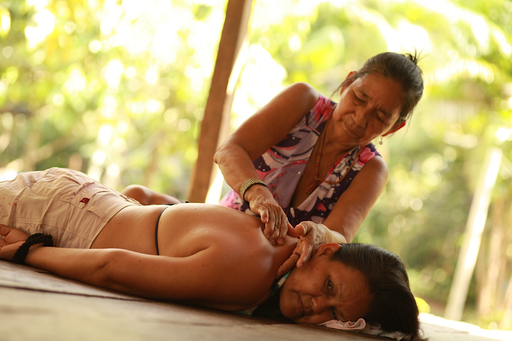
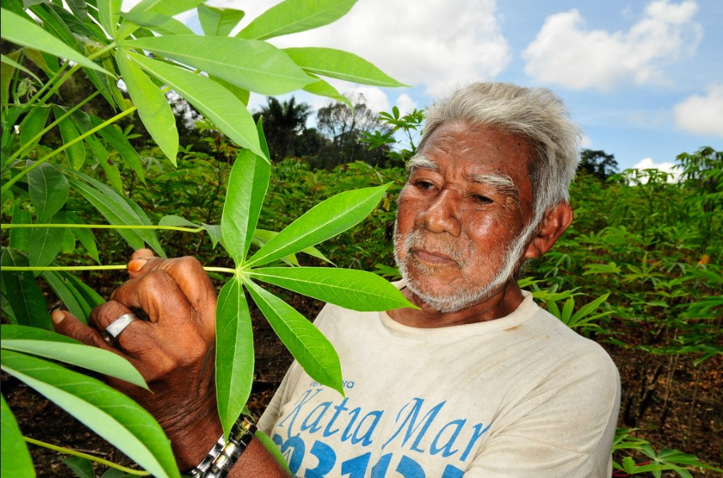

Black River Chamber of Commerce Target Audience
The main audience of the website of the Black River Chamber of Commerce website is owners of small and medium companies. These people are looking for partners and ideas, always with a sustainable approach and use of the Amazon Rainforest. People who want to start their business and make the best with the forest resources will also be found around here. They will find more experienced business owners and specialists who can guide and help them.
Persona 1
Marilza: owner of a local aesthetics clinic
Demographics
- 53 years old
- Married
- Mother and grandmother of many
- Basic study
Goals and tasks
- Scheduling appointments
- Finding raw material suppliers
- Opportinities to learn new techniques
Environment
Marilza is a grandmother running an aesthetics clinic, where she applies family technics and prepares cosmetics using local herbs. She is not very comfortable using computers and technologies, but she has learned some basic skills. She looks for network.
Persona 2
Heleno: local Agricultural producer
Demographics
- 60 years old
- Married
- High school
Goals and tasks
- Finding ways to sell his products
- Hiring new staff
- Find sellers who offer their products to the end customer
Environment
Heleno is a local agricultural producer and wants to start his business. He is looking for people who can sell his products and guidance on how to produce more safely, generating a minimum Florestal impact.